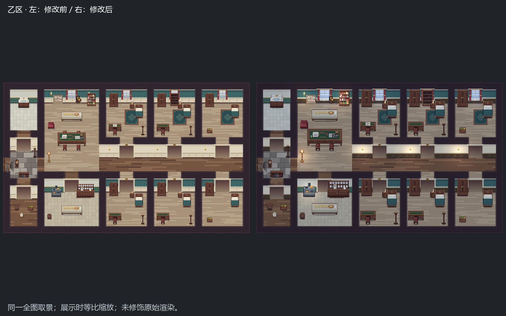
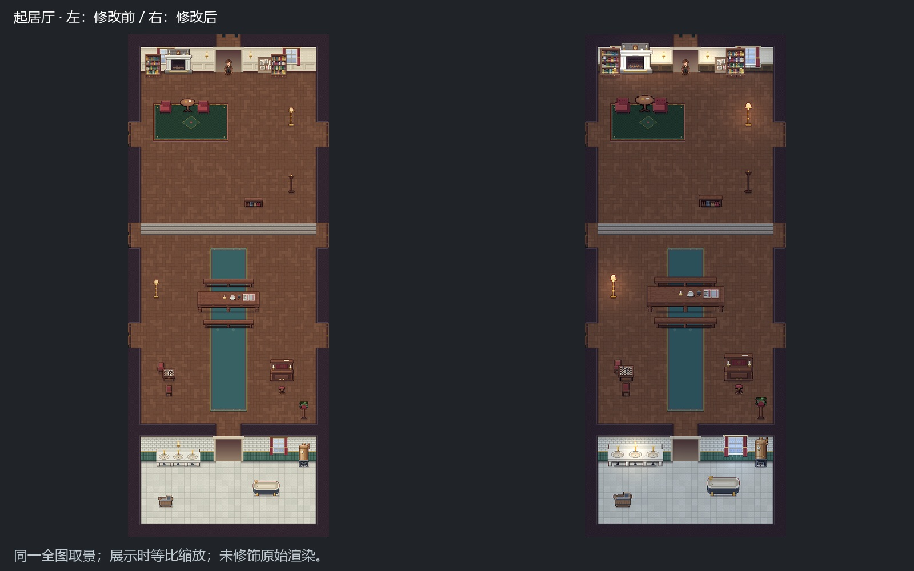
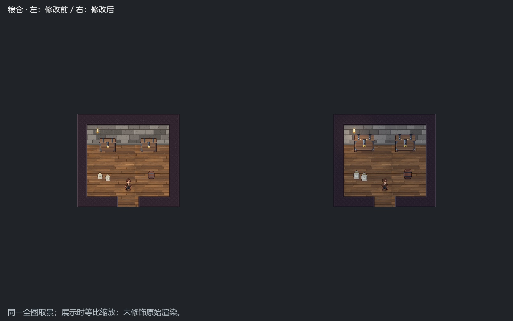
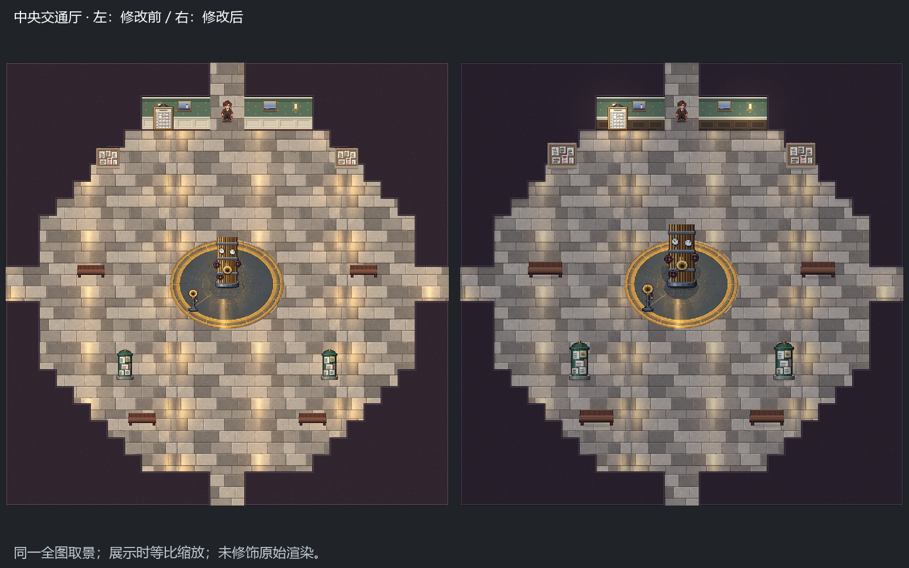
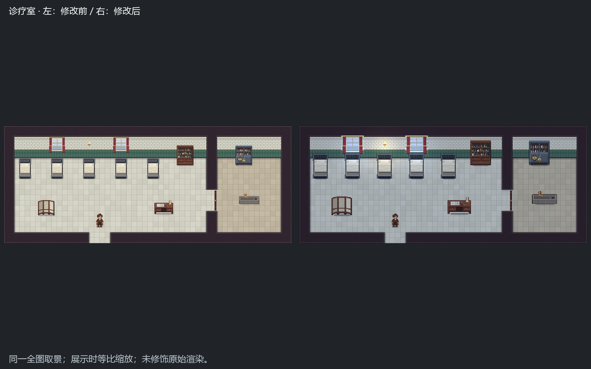
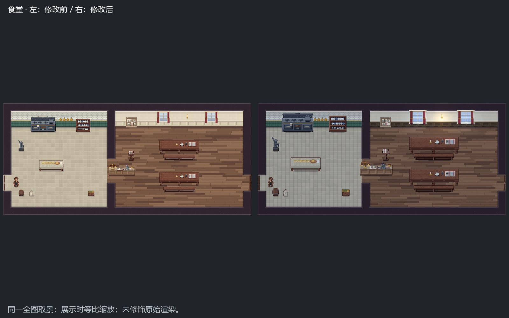

家具绕脚点放大25%，底缘越界的物件保留原尺寸；窗户横向25%、纵向15%；按各墙段实际材质增加木护板、压条与踢脚线，卫生间/厨房瓷砖保留。代码生成局部冷暖光晕、偏冷环境底色与接触影。原始素材分辨率不变，未把低清图放大伪装成原生64px细节。
目标：各场景概念图的体量和光色。取景：与上一轮一致的正式地图全图。最终采集21张，采集进程返回0，最终日志未报告脚本错误。
仍存差异：家具原稿类型、沙发/大型粮箱、植物及完整墙面装饰没有补齐；旧碰撞足迹尚未随视觉放大，未验收真实走路接触。全图渲染不包含正式Host日时、UI、窗束和玩家镜头。正式Host采集尝试因capture_saved_game依赖脚本无法解析而在启动前失败，未产生可用会话画面，不能声称Host全链通过。





